공공디자인을 통한 삶의 질 향상 — 사람을 위한 계획
[공공디자인 뉴스 특집기사 4]
“사람을 위한 계획을 실현한다.”
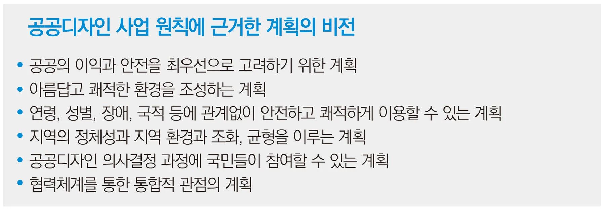
공공디자인 계획 트렌드의 변화
“사람을 향해가는 공공디자인 계획”
공공디자인의 계획은 공공디자인법 제정 이전에는 공공디자인 기본계획이라는 조례 기반의 지자체별 단위로 수립되다가 법제정이후에는 지역 공공디자인 진흥계획으로 수립되고 있다. 삶의 질 향상이라는 궁극적인 목적은 유사해도 두 계획의 가장 큰 내용적 차이는 계획이 지향하는 주제에 있다.
이전 공공디자인 기본계획은 주로 ‘매력있는 도시환경 연출’이라는 개념을 가지고 경관권역에 기초한 권역별 공공디자인 전략 체계와 공공건축물, 공공시설물, 공공공간, 공공시각매체, 옥외광고물의 유형별 가이드라인 체계를 갖추는 경관법의 실행 관점의 요소관리 중심으로 계획이 되었다.
[그림1] 2009 충청북도 경관기본계획의 실행체계로서의 공공디자인 역할 규정
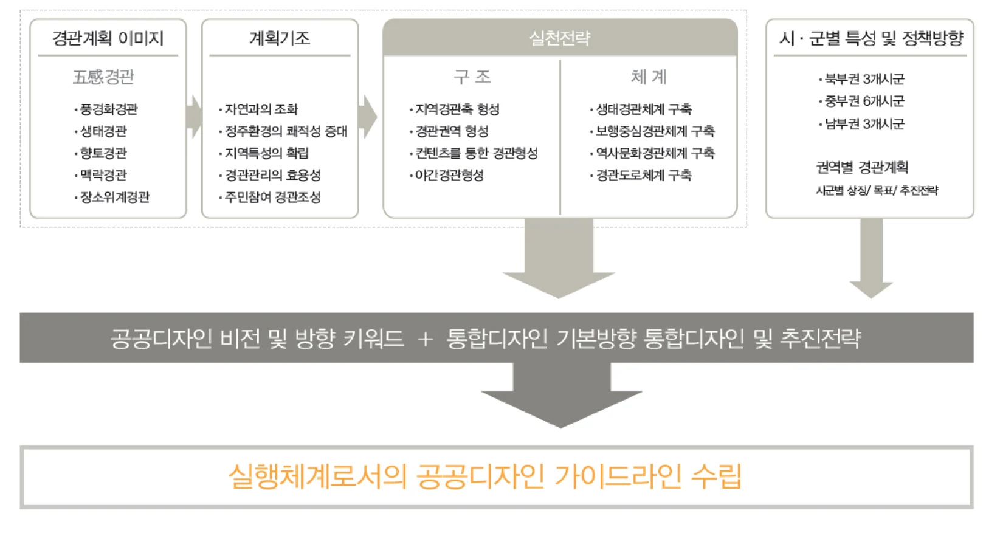
[그림2] 인천광역시(2009.8) – 인천광역시 공공디자인 기본계획의 비전
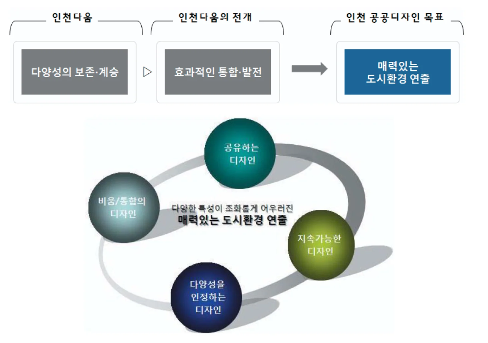
“공공디자인 법을 통해 공공디자인 계획의 전환기를 맞이하다” 2018년 이후 공공디자인 진흥계획은 국가의 공공디자인 진흥종합계획에 따라 디자인의 주제가 안전, 편의, 배려, 품격 등의 주제가 제시되었다. 이로서 공공디자인법을 통해 제시된 '공공의 이익과 안전'이라고 규정된 사업의 계획 원칙이 좀 더 명확히 구체화 되어 공공디자인 계획은 더욱 특화되어 발전해가게 된다. 기존 법정계획과 다른 특이한 점은 도시기본계획이나 경관계획은 행정규칙으로서 계획수립지침이 존재하나 공공디자인 진흥계획은 공공디자인 사업 진행에 필요한 최소한의 기준만을 행정규칙으로 제시하고 있다. 이는 국가의 공공디자인 방향의 큰 틀은 유지하나 각 지자체마다 다른 전략과 구성, 내용의 계획을 수립하게 하는 결과를 낳고 있다. 이러한 계획의 제도적 특징은 우리 사회가 갖고 있는 다양한 필요에 관심을 갖게 하고 있는데 주제를 다양화하며 사회적 측면으로 확대함과 동시에 주민참여, 참여적 디자인 프로세스를 반영한 계획과 고령화 사회에 대응하는 유니버설디자인, 안전디자인 등 새로운 공공가치 창출을 위한 전략으로서 디자인계획을 수립하고 있다. 가이드라인도 기존 유형별 가이드라인에서 범죄예방 가이드라인, 생활 배려 가이드라인, 여성친화 가이드라인은 목적별 가이드로 진화되어 가고 있다.
[그림3] 2020 강남구 공공디자인 진흥계획의 비전
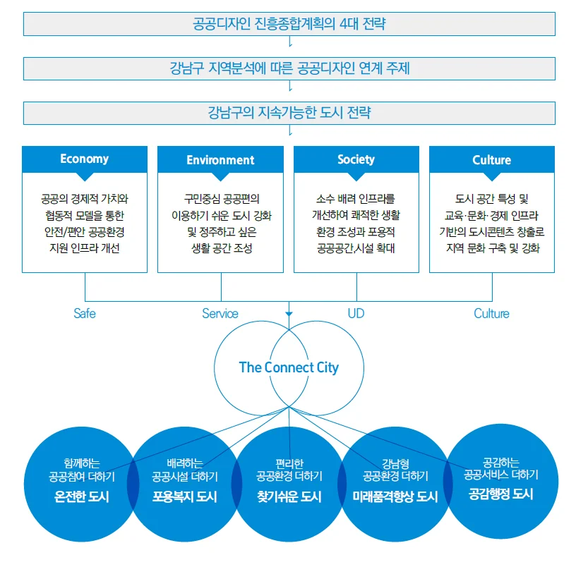
[그림4] 2019 춘천시 공공디자인 진흥계획의 비전
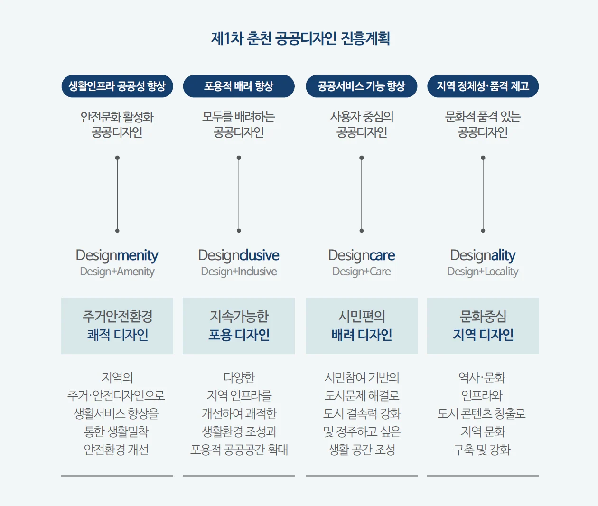
[그림5] 2019 성북구 공공디자인 진흥계획의 비전
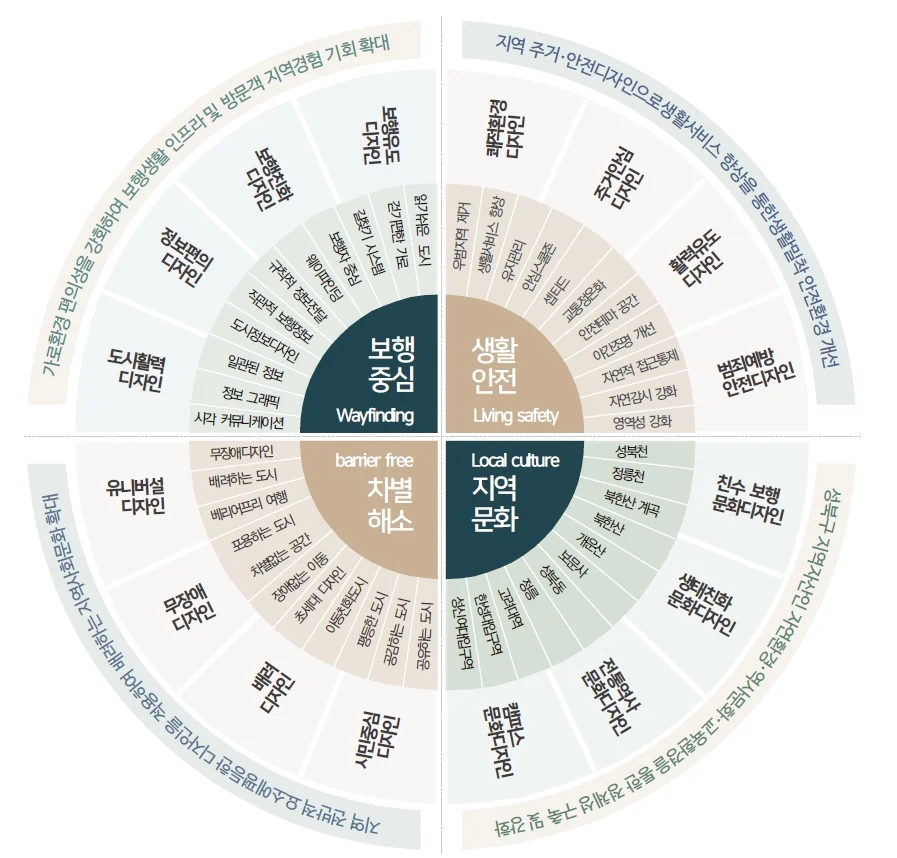
결국 공공디자인 계획의 특징은 시기적으로 2005년에서 2015년까지 도시환경 개선과 유형요소별 관리를 위한 규정의 특징을 지니는 1기와 2016년 공공디자인 법 이후 사회적 주제와 공공가치 구현 그리고 권장형 타입의 목적별 가이드라인의 특징을 지니는 2기로 나뉘며 발전해간다 볼 수 있다.
[그림5] 공공디자인 가이드라인 계획의 변화
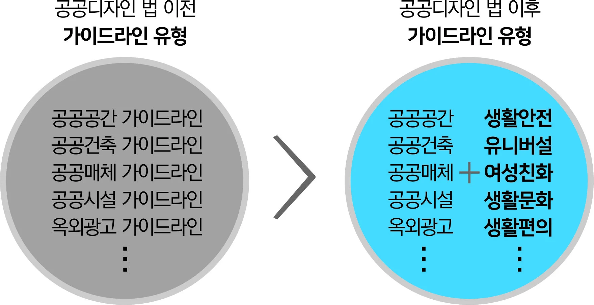
공공가치 중심과 인본주의적 디자인 전략으로 진화되어 가는 공공디자인.
“ 보이는 공공디자인에서 보이지 않는 공공디자인으로”
공공디자인 계획과 가장 관련이 많은 계획은 도시기본계획과 경관계획이 있다.
쉽게 말해 우리 도시의 관리에 있어 기능, 구조, 이용, 관리에 대한 계획을 도시기본계획을 통해 수립하고 도시를 이루고 있는 물리적 경관 요소에 대한 관리에 대한 계획을 경관계획, 건축기본계획 등을 통해 수립하고 그렇게 물리적으로 이루어진 도시 안에 사람의 안전, 편의, 배려, 품격에 관한 계획은 공공디자인 계획을 통해 수립하여 계획 간의 정합성과 연계성을 통해 통합적 시너지를 내야 한다. 특히 공공디자인 진흥종합계획은 수립초기부터 의제를 중앙부처의 추진 의제와 정합성을 맞추고 세부주제의 경우 지자체 단위까지 염두에 두고 연구되었으며 행정-생활 등 영역 설정도 단순시설물에만 머무르지 않고 공공영역의 모든 분야를 포함시켜 타계획 및 분야와 융합이 쉽게 이루질 수 있도록 수립된 특징이 있다.
계획들이 2000년 후반에 만들어진 법정 계획들로 아직 견고하게 정착되진 않았지만 선진형의 도시의 공공성을 향상시키기 위해 각 계획별 특성을 강화하며 보완 협력체계로 나아갈 필요가 있다.
[그림6] 도시기본계획과 경관계획, 건축기본계획, 공공디자인 진흥계획의 비교
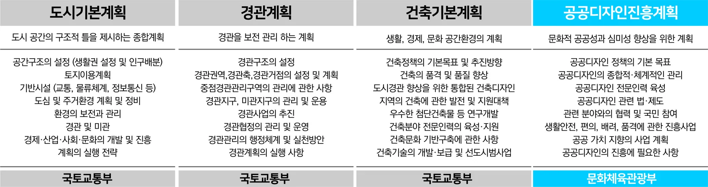
공공가치를 향상시키는 공공디자인 계획 전략
‘디자인을 통해 공공가치를 높이다“
계획의 전략1. 공공가치 기준 수립 및 계획 적용
- 공공디자인 계획의 공공성을 향상시키기 위해 계획시 공공가치를 향상시킬 수 있는가에 대한 지표설정을 기준으로 수립 (예: 공공가치 지수 : Public Value Index (PVI) )
- 공공가치지수 평가를 거친 공공환경의 선정된 거점들은 거점별 특성을 분류·분석하여 공공디자인 계획지로 발굴하여 공공디자인 진흥사업 발굴 및 전략적 선도 프로젝트로 계획 수립
- 물리적 공공환경 수준을 분석하고 활동영역의 범주와 인간활동 행태를 통한 공공가치의 개선 요소를 발굴하기 위한 12가지 공공가치 지표. 보행자 관점에서의 고려해야 할 12개의 공공디자인 가치지표를 통해 공공환경을 관찰·분류·분석하여 계획에 반영
[그림7] 공공가치 지수 : Public Value Index (PVI) 지표 마련 _ 강남구 공공디자인진흥계획
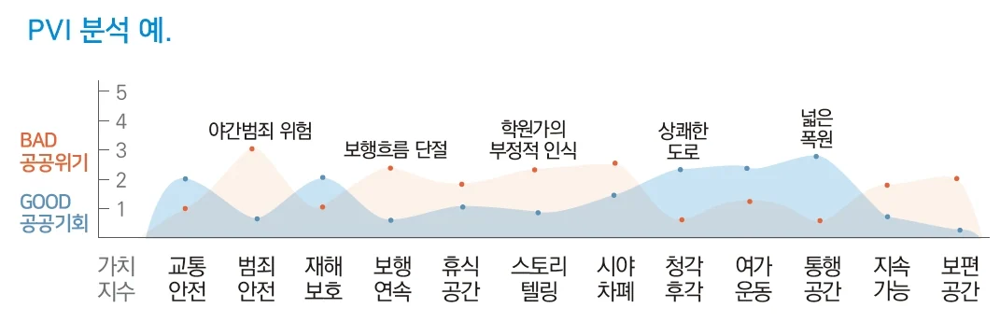
[그림9] 공공가치 지표에 따른 계획 대상 분석 _ 성북구 공공디자인진흥계획
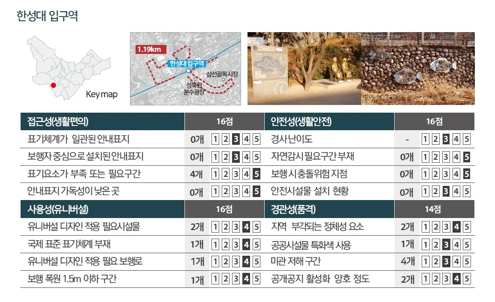
계획의 전략2. 체감형 공공디자인을 위한 민원분석
- 공공영역의 문제점을 발견하고 체감형의 공공디자인 계획을 위하여 연중 상시 제기된 민원을 분석 적용
- 공공디자인 주제인 생활안전, 생활편의, 차별불편, 품격미관 등과 관련하여 민원을 분석하면 다수의 민원이 포함되면 공공디자인의 계획은 민원해결 계획이라는 생활체감형의 디자인계획으로서의 가치를 지님.
[그림9] 공공가치 지표에 따른 계획 대상 분석 _ 성북구 공공디자인진흥계획
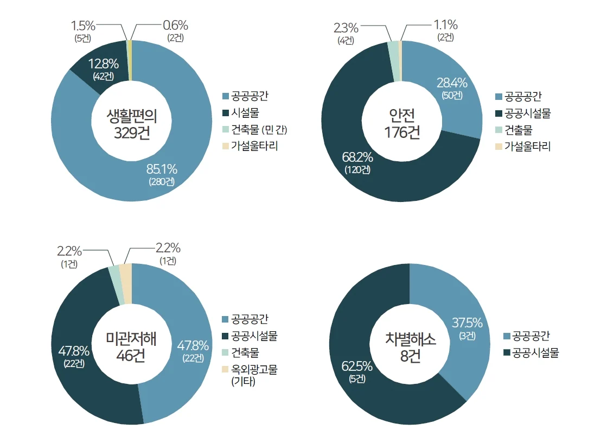
[그림11] 공공디자인 계획 대상지별 공공디자인 기반 민원 분석 _ 성북구 공공디자인진흥계획
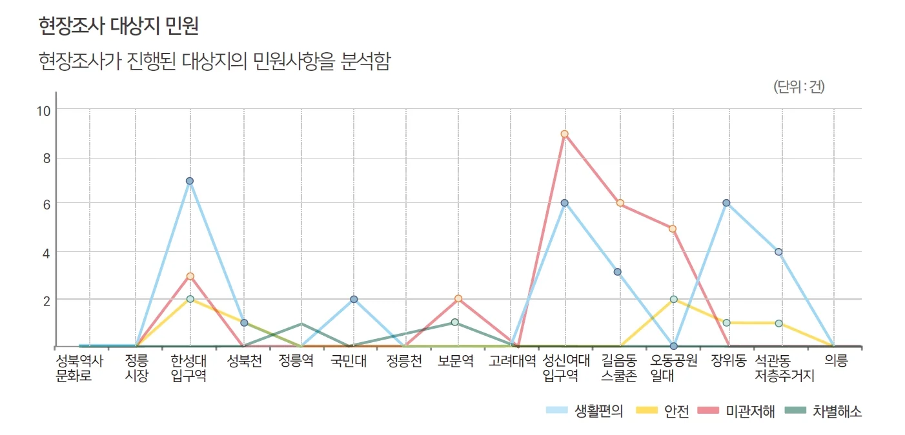
[그림12] 공공디자인 주제에 따른 민원항목 분석 _ 강남구 공공디자인진흥계획
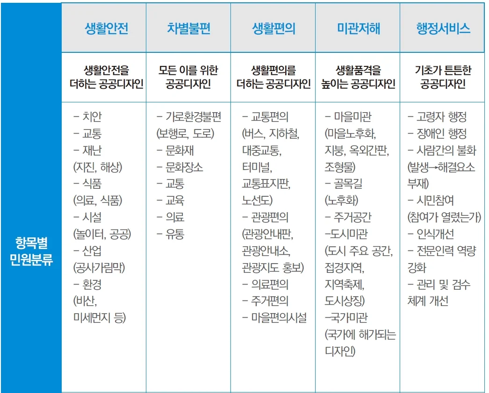
[그림13] 공공디자인 주제에 따른 민원항목 분포 _ 강남구 공공디자인진흥계획
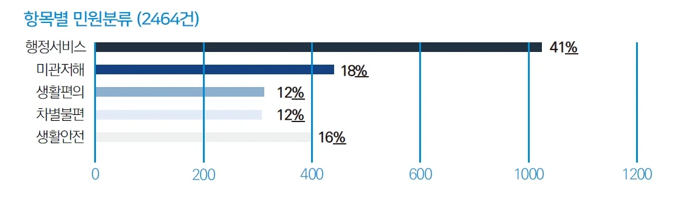
계획의 전략3. 협력-지원 체계기반의 공공디자인 계획
- 공공디자인 계획의 실효성을 높이기 위해 공공디자인 진흥계획 4대전략을 기준으로 부서별 공공디자인 유관 사업을 재분류하여 사업의 공공가치 향상을 위한 전략으로 공공디자인을 계획.
- 부서의 실행전략과 방안으로서 공공디자인 계획의 가치 도모
- 지원-협력-통합 등의 다양한 계획 유형의 수립을 통한 사업별 공공가치 향상
[그림14] 안산시 시책.정책과 연계한 공공디자인 계획 연구_안산시 공공디자인 진흥계획
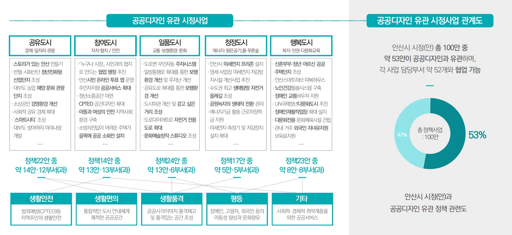
[그림15] 시 전체 55% 부서사업을 공공디자인 계획과 연계_안산시 공공디자인 진흥계획
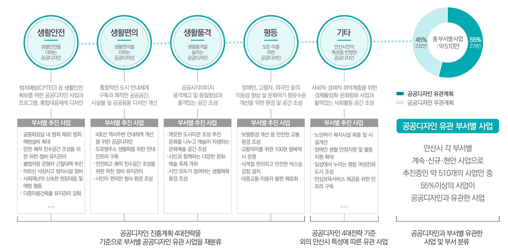
[그림16] 공공디자인 계획시 단위별 사업의 자치구지원-부처연계-시책-부서별사업과의 연계, 협력, 지원 계획을 수립 _성북구 공공디자인 진흥계획
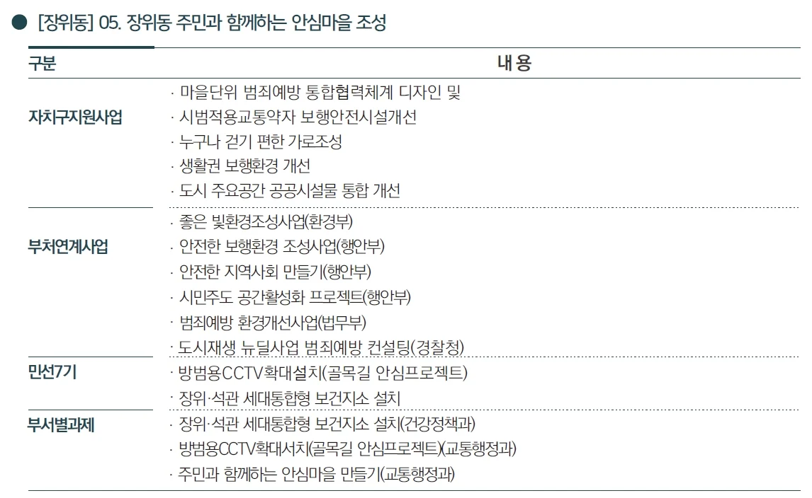
계획의 전략4. 공공디자인 가치향상의 지침이 되는 가이드라인 계획.
공공디자인 부문별 항목인 공공공간, 공공건축, 공공시설물, 공공매체 등에 대하여 기획·조성·제작·설치·운영 진행시 기존 유형별, 기능적 관점의 기본원칙과 세부지침을 제시하는 가이드라인을 공공디자인 목표인 생활안전, 생활편의, 생활배려, 지역품격 등의 공공가치를 향상시킬 수 있는 권장 지침으로 가이드라인을 계획
[그림17] 생활안전, 생활편의 등 공공디자인의 주제에 맞춘 가이드라인 계획 _성북구 공공디자인 진흥계획
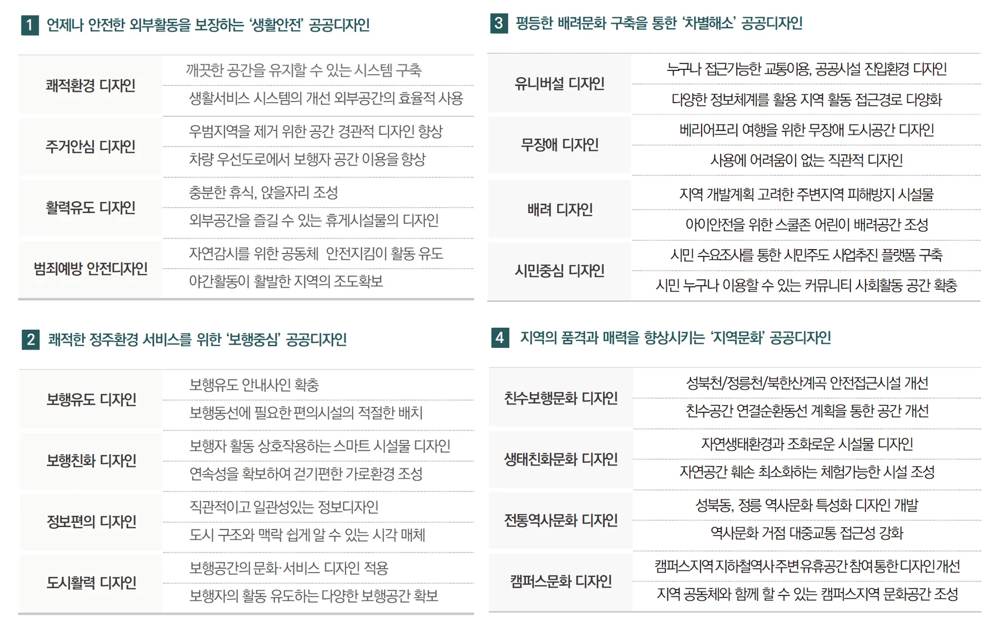
[그림18] 생활안전, 생활편의 등 공공디자인의 주제에 맞춘 가이드라인 구성 계획 _안산시 공공디자인 진흥계획
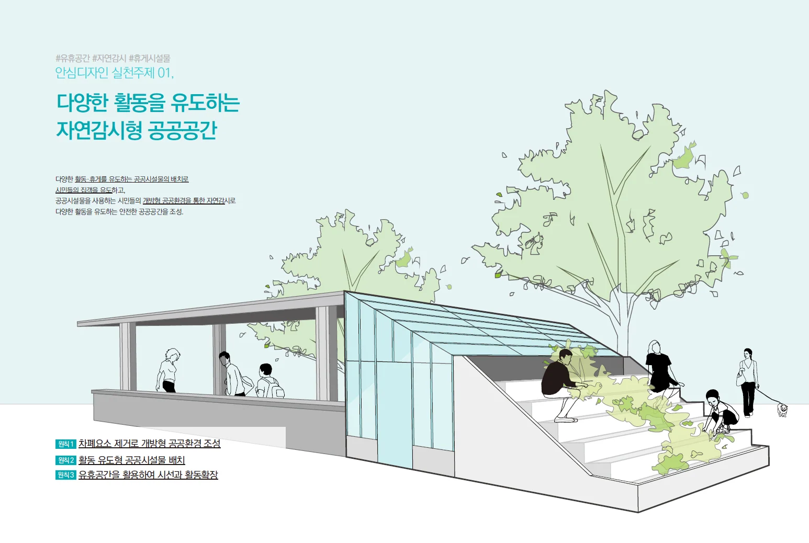
[그림19] 생활안전, 생활편의 등 공공디자인의 주제에 맞춘 가이드라인 구성 계획 _안산시 공공디자인 진흥계획
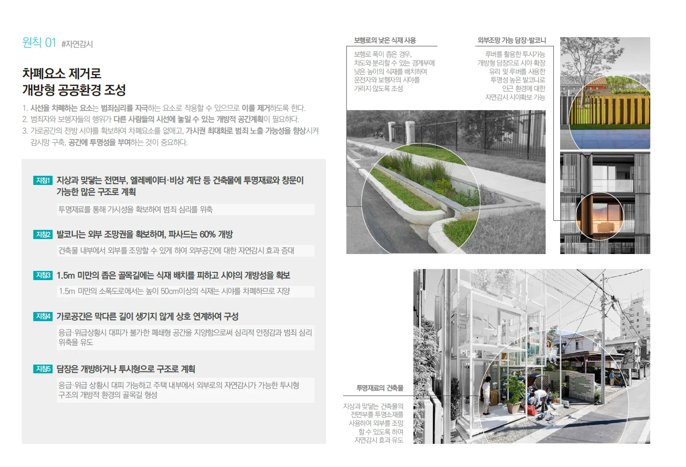
공공디자인 진흥 가이드라인의 활용 계획
- 공공디자인 부문별로 기본방향과 세부지침을 통합적으로 체계화하여 공공디자인사업 시행 시 자문 및 심의 기준을 효율적으로 제시함
- 사업 계획 전·후 방향성에 대한 지침서로 활용하며, 공공시설물 설치 및 유지관리 체크리스트로 사용되어 통합적인 도시 이미지를 개선
- 주민홍보, 공무원 디자인 교육 자료와 자문 및 심의 기준으로 활용